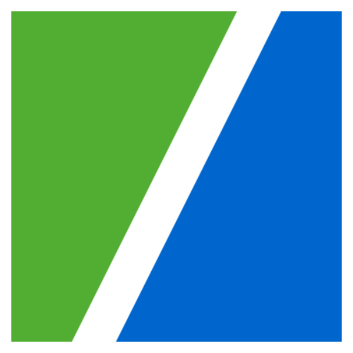

My latest Projects
MVGO
Within a team of four designers I was resposnible for connection information and integration of
sharing
providers within the local public transport app for munich.
Public transport • Prototyping • Native App
View MVGO Project
IMAP

The digitization project is based on a PWA developed with Outsystems. As a designlead in a small
agile
team I was responsible for both UI/ UX tasks and research within the project.
Digitization • Head of UX • Design Guide
View IMAP Project
Social Journal
The project was an adaption of the application social journal that should enable users to
jointly
reflect
on their usage of digital devices while interacting with their counterpart.
Research • App Development • Design
View SoJo Project